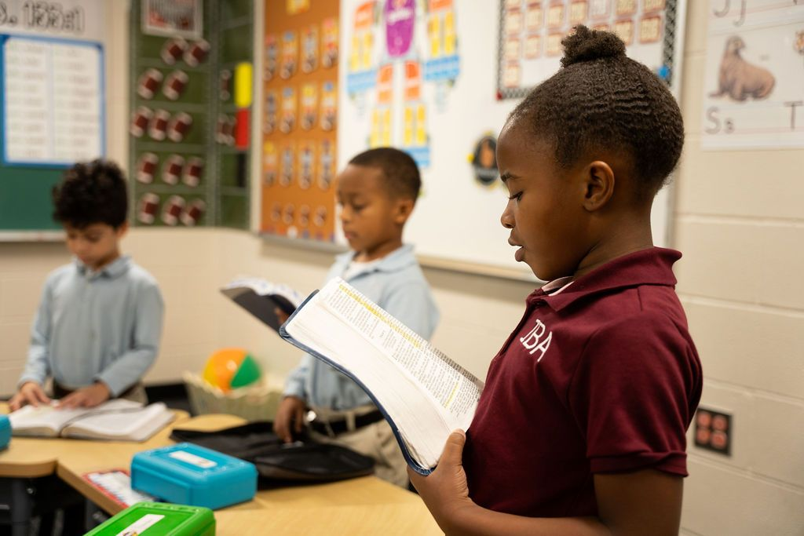

About

Our History
Independent Baptist Academy was started in 1973 by Independent Baptist Church under the leadership of Dr. Pat Creed. From the very beginning our values have remained constant. We believe children in our church and in our community need to have access to a traditional, Christian education. We have been blessed to see hundreds of seniors walk across the platform to receive their diplomas. It has been a true joy to see many of these graduates go on to be pastors, doctors, nurses, firemen, missionaries, civil servants, etc. Our prayer is to see hundreds more graduate with the foundation necessary to know how to live and how to make a living.
What Is Christian Education?
“Christian education is unlike any other type of education because in Christian Education, the Bible permeates every aspect of the school. Therefore, the school’s philosophy is based on the principles of God’s Word. The Bible becomes our filter through which policy, administration, curriculum, discipline, and every other school decision flows. Simply stated, the Bible is the foundation upon which the school is built.” (Classroom Perspectives, page 28). Christian education is education that is based upon the truth of God’s Word which states: “In whom are hid all the treasures of wisdom and knowledge” (Colossians 2:3).
By basing each area of the school upon God’s Word, each student can understand God’s wisdom, power, judgment, and love in his study of history, science, math, English, music, and art. Character development and life goals are also taught from Biblical principles. The student then truly is enabled to have knowledge with wisdom and understanding of God’s design and plan. Jesus said, “I am the way, the truth, and the life.” (John 14:6) Apart from Christ, there can be no true education.
Objectives in Christian Education
Our objectives in education for our children are as follows:
- To prepare them spiritually by instilling in them a love for the Lord Jesus Christ, God the Father, and His Holy Spirit, and a personal sense of responsibility to be all God wants them to be
- To prepare them to live successfully
- To encourage them to think and work clearly, logically, and independently
- To offer an instructional program that meets their academic needs
- To help them develop an understanding of the world in which they live and the ability to appreciate and adjust to their environment
- To teach them how to gain mastery in the tools of learning and communication
- To develop a sense of responsibility as a citizen and as a Christian
- To develop a moral, ethical, and spiritual sense which will aid them in appreciation of their own personal worth and that of others
- To provide opportunities for developing skills necessary to make a living
- To offer opportunities to participate in wholesome forms of recreation
- To prepare each child for an outstanding position in life, and for spiritual leadership in school, home, church, community, state, nation, and the world
Our Purpose and Objectives
The Bible gives parents the responsibility to “Train up a child in the way he should go: and when he is old, he will not depart from it.” (Proverbs 22:6) The key to success in this process will only be realized to the fullest extent when the home, church, and school stand united in the Christ-centered, Bible-centered training of a child. The home, church, and school share this great responsibility. It is the purpose of Independent Baptist Academy (IBA) to present Jesus Christ as Lord and Savior and provide high-quality, Bible-centered education. It is our desire that the home and church stand united with us in this purpose. As a result, Independent Baptist Academy has the following objectives:
1. Christian Character
Our primary goal is the training of Christ-like qualities in the lives of our young people so they truly grow up “in the nurture and admonition of the Lord… [and that they] be conformed to the image of His son.” (Romans 8:29)
2. Bible Truth
Training in the Bible is recognized to be of fundamental importance. It augments all other segments of the student’s training; and without Bible training, a student cannot be considered educated in the truest sense. The Bible gives the best light for this life and the only hope for the life to come. There is no other book, which can enrich and illumine the hearts and minds of students as the Bible—the only revealed Word of God.
3. Morality, Decency, and Orderliness
In I Timothy 4:12, we find: “Let no man despise thy youth: but be thou an example of the believers in word, in conversation, in spirit, in faith, in purity.” We believe in constantly upholding the highest virtues. Our students are taught by example that it is possible to walk after the Spirit and not fulfill the desires of the flesh. Our students are taught that “God is not the author of confusion,” but that He is, in every aspect of His creation, decent and orderly. Every student is brought to see that the manner of conduct set forth by God is offered freely for the benefit of all.
4. Self-discipline and Modesty
These qualities are mandatory for the welfare of the home, church, school, and the world in which we live. Our discipline system is designed to aid the student in areas that need improvement. We notify a student when he or she has violated an appearance standard or a conduct code. In an effort to keep our parents informed of conduct problems, parents are contacted by a student’s weekly report, by quarterly progress reports, by quarterly report cards, or a needed phone call concerning the problem their child has, the action taken, and/or improvements needed. In all of this, our final objective is that of working toward a self-disciplined and modest approach to life.
5. High Scholastic Achievement
High scholastic achievement is very important at Independent Baptist Academy. Beginning in K-5, our students learn to read by using the Abeka program, which is a proven and successful phonetic approach to reading. Students are encouraged in accordance with Scriptures to strive for academic excellence in seeking to do their best for the Master.
6. Patriotism
Independent Baptist Academy strives to instill in each student a love and loyalty for our country. Nathan Hale best described patriotism for our great nation when he stated just before his death, “I regret that I have but one life to give for my country.” Our students are taught the principles of good citizenship and respect for authority, as well as the responsibilities they owe to their state, country, and nation.
Statement of Faith
The basis for Independent Baptist Academy can be found in the Word of God. The following nine statements are our foundational beliefs:
- We believe in the verbal inspiration and authority of the Scriptures. The King James Version of the Bible reveals God, the fall of man, the way of salvation, and God’s plan and purpose in the ages.
- We believe that there is one God, eternally existent in the three persons: the Father, the Son, and the Holy Spirit.
- We believe in the Deity and Virgin Birth of our Lord Jesus Christ, in His sinless life, in His miracles, in His vicarious and atoning death through His shed blood, in His bodily resurrection, and His ascension to the right hand of the Father.
- We believe in the visible, personal, and pre-millennial return of Jesus Christ.
- We believe that salvation is “by grace” plus or minus nothing. The conditions to salvation are repentance and faith in Jesus Christ.
- We believe that man is sinful and thereby separated from God. He is justified by faith alone and counted righteous before God only through the merit of our Lord and Savior, Jesus Christ.
- We believe in the resurrection of both the saved and the lost: the saved unto the resurrection of life, and the lost unto the resurrection of damnation.
- We believe in the eternal security of the believer in Christ.
- We believe in the local church with the ordinances of baptism by immersion and the Lord’s Supper.
Explore the Possibilities at IBA!
Come see the campus, meet our teachers, and ask your questions.